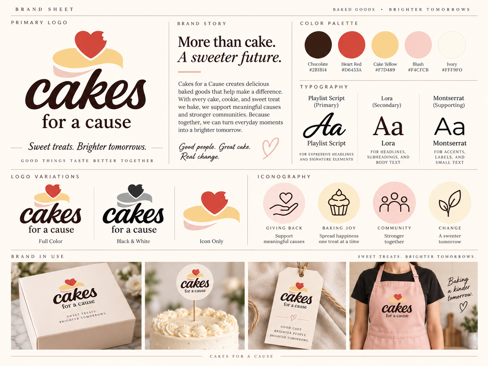
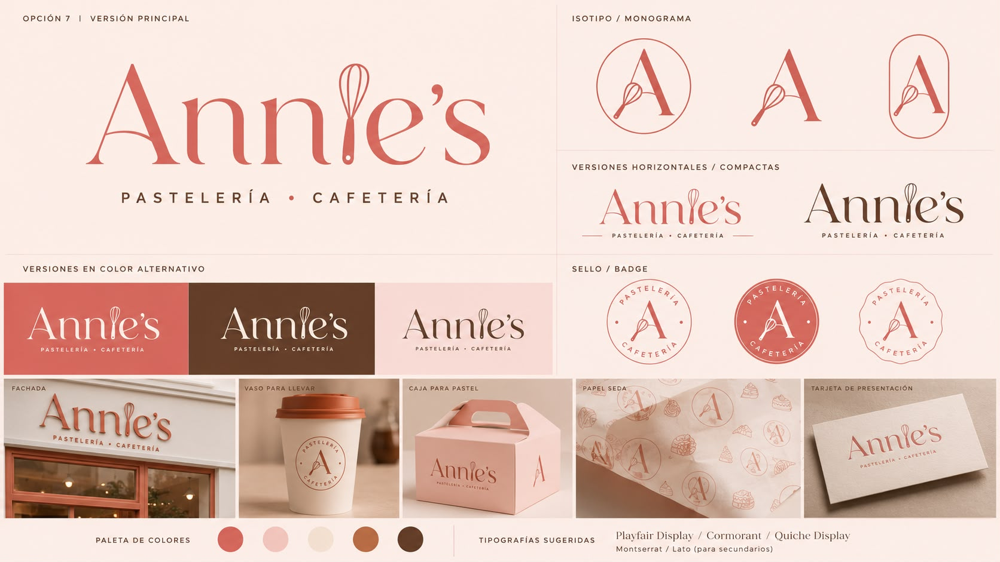
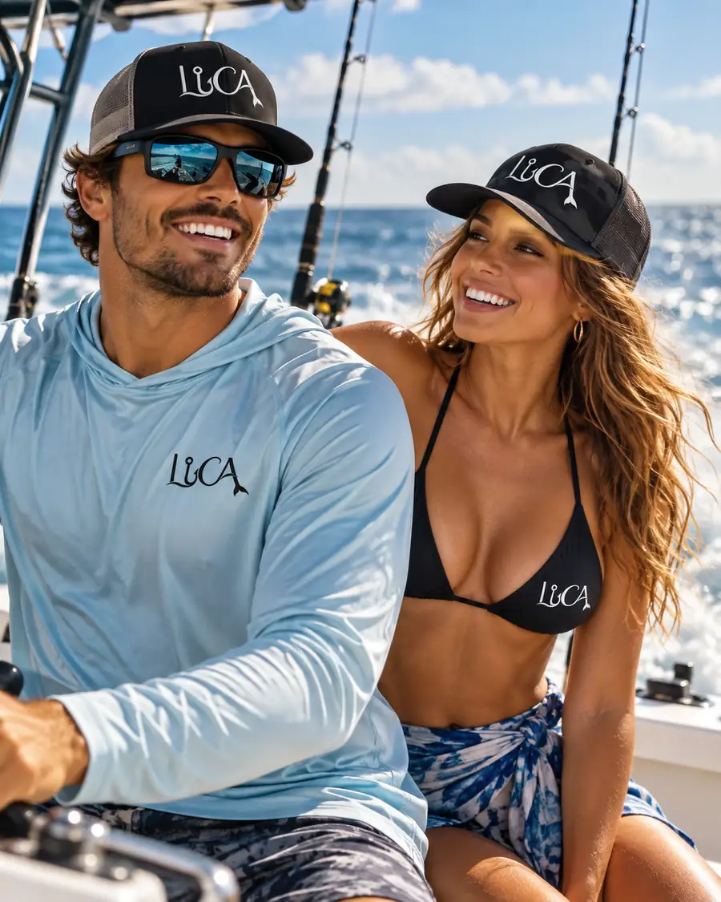

Portfolio / The project archive
Case studies.
Every project starts with a different question. Explore what happens when strategy, identity, and execution come together.
From brands built from the ground up to websites and product interfaces — each story documents a different part of the process.
9 case studies · All disciplines

Market Open Media
Designing a clear website experience for a local marketing agency.

Las Marías Market
An expressive identity and marketplace for independent makers and women-led stories.

Star Bake
A mobile-first bakery shopping and rewards experience.
Eva Shoes
A handmade footwear identity with an e-commerce design direction.

Cakes for a Cause
Warm branding and digital touchpoints for a purpose-driven bakery.

Annie’s Bakery
Refreshing a family bakery identity while honoring its heritage.

Jarvis Dashboard
A product interface that simplifies daily briefings and important information.

LUCA
An ocean-inspired apparel brand rooted in family and fishing adventures.

PeekaPrint
A graphic identity expressed through logo variations and signage.
No case studies match this category.